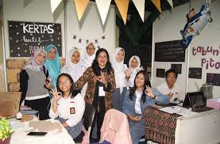

SMAN 3 BANDUNG
KNOWLEDGE IS POWER BUT CHARACTER IS MORE
TENTANG BU DIANA
Dr. Diana Susyari Mardijanti,S.Pd, M.PFis.
- PENDIDIKAN
- SMAN 5 Bandung, 1990
- Fisika FMIPA, ITB, 1990
- Magister Pendidikan Matematika, ITB, 2009
- Doktor Ilmu Lingkungan, UNPAD, 2016
PROFESI
- PNS Guru mata Pelajaran Fisika, SMAN 3 Bandung
PENGEMBANGAN DIRI
- Tim Supervisi PKWU Nasional. Dir PSMA, Kemendikbud
- Tim Penyusunan Modul / Bahan Ajar SMA Terbuka (Provinsi)
- Penulis Buku Fisika Kelas XI, ” Buku Catatan Fisika-Koe”
- Penggagas dan Pembina Model Pembelajaran Berbasis Riset / Research Based Learning
FOTO BU DIANA :

kontak kami :
email : sman.3.bdg@sch.id
no telp : 021-5725610
alamat: Jl. Belitung No.8, Merdeka, Kec. Sumur Bandung, Kota Bandung, Jawa Barat 40113